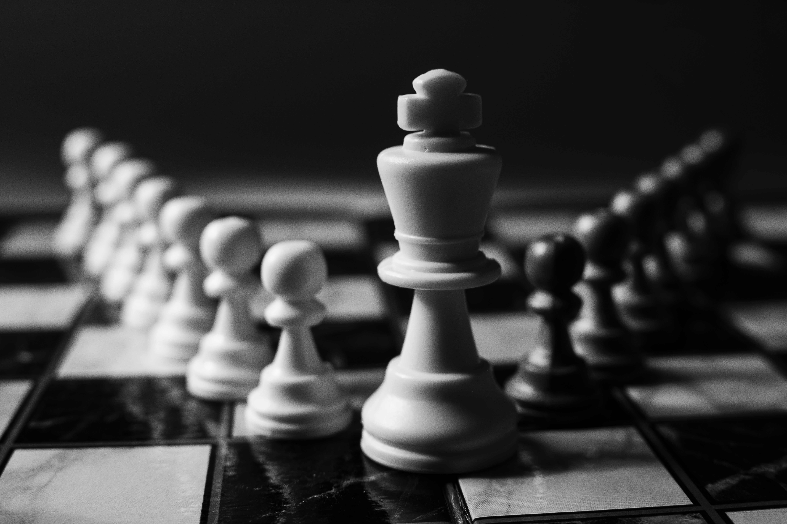

Apto para todas las edades, el Ajedrez es una de las actividades más beneficiosas para la mente.
El Ajedrez es considerado un deporte mental, ya que trasciende al propio juego. Incluso hay quien lo eleva a la categoría de arte y ciencia.
Es un juego de estrategia en el que dos personas se desafían
frente a un
cuadriculado de 64 casillas y dos grupos de figuras , 16
para cada jugador, unas blancas y otras negras: un rey, una dama, dos
alfiles, dos caballos, dos torres y ocho peones. El Comité Olímpico
Internacional lo considera un deporte y la Federación
Internacional de Ajedrez regula las competiciones
internacionales.
Los 10 mejores jugadores de ajedrez de la historia
El Ajedrez, ese fascinante juego que tiene la capacidad de hacer feliz
al hombre, ha contado con numerosas leyendas, campeones del mundo,
aspirantes, jugadores de clase mundial y grandes maestros.
Las partidas de estos maestros son una fuente de placer,
inspiración y aprendizaje para todos nosotros, y es gracias a ellas que
podemos descubrir los secretos de nuestro juego.
Lista con los 10 mejores jugadores de la historia:
1-Garry Kasparov
2-Magnus Carlsen
3-Bobby Fischer
4-Jose Raul Capablanca
5-Anatoly Karpov
6-Mikhail Botvinnik
7-Vladimir Kramnik
8-Emanuel Lasker
9-Mikhail Tal
10-Alexander Alekhine
El Ajedrez es considerado un deporte-ciencia porque además de requerir cierto nivel de destreza mental, se fundamenta en una estrategia.
Además, es divertido, saludable y puede practicarlo personas de todas las edades.
Por otra parte, como el ajedrez exige una gran concentración, mejora el nivel de atención de quien lo practica. También potencia la capacidad de enfrentarse a diferentes situaciones y la habilidad para resolver problemas, gracias al diseño de movimientos y estrategias. Además, como los jugadores deben tomar decisiones de manera rápida bajo presión, se desarrolla un pensamiento creativo y original.
Este deporte también enseña a planificar y anticiparse a los movimientos del contrincante, al mismo tiempo que potencia el autocontrol y el buen juicio. Asimismo, mover las piezas por el tablero es una buena terapia motora y favorece la coordinación entre movimiento pensado y realizado.
Dato Interesante:
El Comité Olímpico Internacional y más de 100 países reconocen el ajedrez como un deporte.